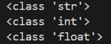
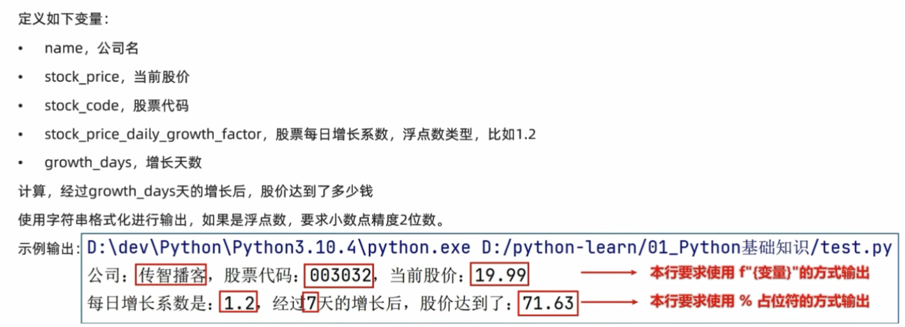

字面量与常见数据类型
字面量就是直接写在代码中的固定值，例如数字、字符串、列表等。
| 类型 | 示例/关键字 | 说明 |
|---|---|---|
| 数字 | int、float、complex、bool |
用来表示整数、浮点数、复数和布尔值 |
| 字符串 | str |
用来描述文本 |
| 列表 | list |
有序、可变的序列 |
| 元组 | tuple |
有序、不可变的序列 |
| 集合 | set |
无序、不重复的元素集合 |
| 字典 | dict |
由 key: value 组成的键值对集合 |
"我是字符串"数据类型
type() 可以查看数据的类型。
print(type("马浩博"))
print(type(666))
print(type(11.234))
上面的输出结果分别对应字符串、整数和浮点数：
<class 'str'>
<class 'int'>
<class 'float'>类型转换
类型转换可以把一个值转换成另一种数据类型。
| 函数 | 作用 |
|---|---|
int(x) |
将 x 转成整数 |
float(x) |
将 x 转成浮点数 |
str(x) |
将 x 转成字符串 |
number = str(111)
print(type(number))字符串
三种定义方法
字符串可以用单引号、双引号或三引号定义。
name = '马浩博'
print(type(name))
name = "马浩博"
print(type(name))
name = """马
浩
博"""
print(type(name))如果字符串里需要出现引号，可以使用反斜杠 \ 进行转义。
message = '他说：\'你好\''
print(message)字符串拼接
字符串之间可以使用 + 进行拼接。
print("马" + "浩博")
me = "浩"
print("马" + me + "博")需要注意：数字不能直接和字符串拼接，必须先转换成字符串，或者使用字符串格式化。
age = 18
print("今年" + str(age) + "岁")字符串格式化
字符串格式化是更灵活的拼接方式，可以把数字、变量等内容放进字符串里。
| 占位符 | 含义 |
|---|---|
%s |
字符串 |
%d |
整数 |
%f |
浮点数 |
number = 1111
avg = 123
message = "python 有 %s 个字母和 %s 个单词" % (number, avg)
print(message)更推荐使用 f-string：
number = "马浩博"
avg = 123
message = f"我是{number}，今年{avg}岁了"
print(message)格式化综合小练习

练习目标：
- 使用变量保存公司名、股票代码、当前股价、每日增长系数和增长天数。
- 使用 f-string 输出公司、股票代码和当前股价。
- 使用
%占位符输出增长系数、增长天数和最终股价。 - 最终股价保留 2 位小数。
name = "传智播客"
stock_price = 19.99
stock_code = "003032"
stock_price_daily_growth_factor = 1.2
growth_days = 7
finally_stock_price = stock_price * stock_price_daily_growth_factor ** growth_days
print(f"公司：{name}，股票代码：{stock_code}，当前股价：{stock_price}")
print(
"每日增长系数是：%.1f，经过%d天的增长后，股价达到了：%.2f"
% (stock_price_daily_growth_factor, growth_days, finally_stock_price)
)数据输入
input() 用来从键盘获取用户输入。需要注意：input() 获取到的内容全部都是字符串类型。
print("请输入一个数：")
a = input()
print(a)
print(type(a))如果需要把输入内容当成数字使用，可以进行类型转换。
a = int(input("请输入一个整数："))
print(a + 10)